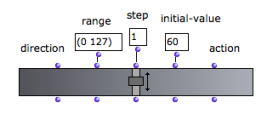
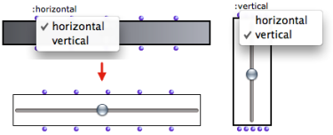
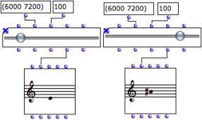
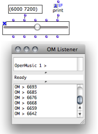
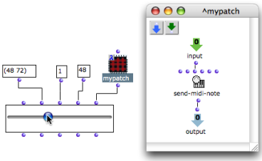

OpenMusic DocumentationHiérarchie de section : OM 6.6 User Manual > Visual Programming II > Interface Boxes > Slider Box
OpenMusic DocumentationHiérarchie de section : OM 6.6 User Manual > Visual Programming II > Interface Boxes > Slider Box
Navigation : page précédente | page suivante
Attention, votre navigateur ne supporte pas le javascript ou celui-ci à été désactivé. Certaines fonctionnalités de ce guide sont restreintes.
Controlling Values : Slider Box
The slider box allows to select a value in a given range with a slider interface.
Features
The slider has five inputs and outputs :
|

|
Settings
Completing the Slider's Setting
To complete the slider's setting :
enter values in the inputs data boxes
evaluate the box
lock the box afterwards to avoid resetting the values at subsequent evaluations.
"Direction" Input
Note that the slider orientation might not be taken into account if it is incompatible with the box's size. A horizontal slider can be "resized vertically".

Slider's Value(s)
The range, step and value inputs can be used to set the slider. The initial value is modified when the user moves the slider.

The slider's outputs give access to the different properties of the slider box.
In particular, the fourth "value" output returns a slider's position's current value.
Using the "Action" Input
The "action" input of the slider can be used for triggering an operation that will integrate the "value" input, that is, **the slider's position, ** as a parameter.

|
The "action" input must be connected to a function or a box on "lambda" mode with one input or argument. When the slider is moved, this function is called with the value of the "value" input as argument. To set or modify the function associated with the slider :
|
A Musical Application

The "range" input takes midi values from 48 to 72 – C3 to C5.
The "step" value is equal to 1, so that each step of the slider corresponds to a semi-tone.
The "initial value" of the slider is equal to 48, the lowest pitch of the range.
The patch on "lambda" mode is a very simple program that applies the slider's value to the pitch input of the send-midi-note function.
When the slider is moved, the note played by send-midi-note matches the value of the slider.
Références :
Plan :
Navigation : page précédente | page suivante
A propos...(c) Ircam - Centre Pompidou